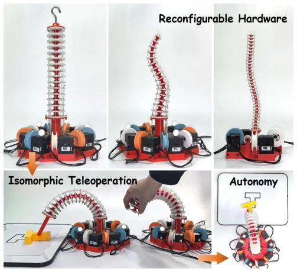
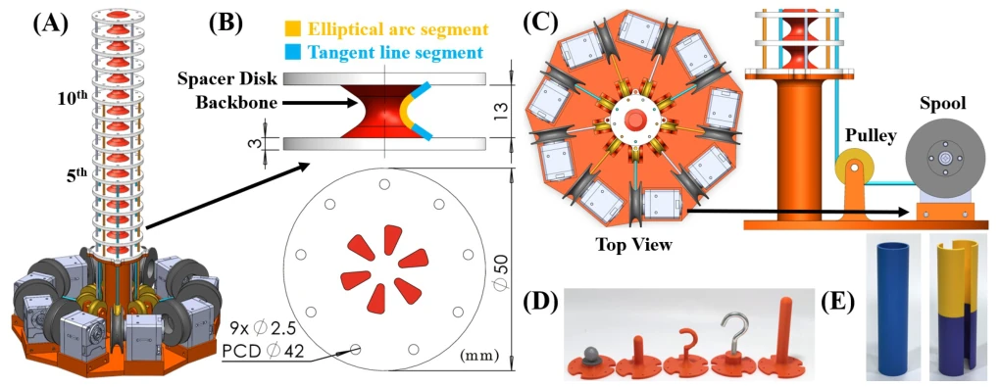
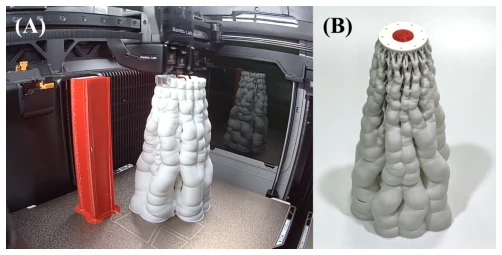
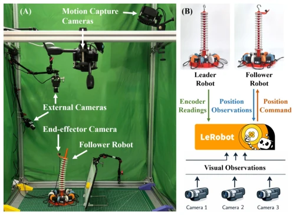
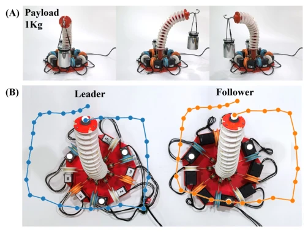

这篇论文试图解决连续体机器人（Continuum Robots）在具身智能领域“叫好不叫座”的尴尬局面。作者很聪明地避开了复杂的运动学建模坑，用“照镜子”式的等距遥操作（Isomorphic Teleoperation）直接映射电机编码，省去了推导雅可比矩阵的头发。硬件上，他们把机器人做成了一体化的 3D 打印件，省去了组装的麻烦，确实提高了可复现性。但吐槽点也很明显：3D 打印机的构建体积限制了臂长，电机成本依然不低，所谓的“学习就绪”更多是数据收集流程的标准化，而非算法本身的突破。对于社区来说，这是一个不错的基准平台，但别指望它能直接去火星探险，毕竟臂长才 24 厘米，且负载仅 1kg。这种“标准化”或许比“智能化”更值得推广，至少让后来者不用重新发明轮子，但能否真正推动算法进步，还得看后续社区是否愿意投入更多算力与数据。
This paper attempts to address the awkward situation where Continuum Robots are "praised but not commercially successful" in the field of embodied intelligence. The authors cleverly avoided the pitfall of complex kinematic modeling, using "mirror-like" Isomorphic Teleoperation to directly map motor encoders, saving the hassle of deriving the Jacobian matrix. In terms of hardware, they made the robot into an integrated 3D printed part, saving the trouble of assembly, indeed improving reproducibility. But the complaints are also obvious: the 3D printer's build volume limits arm length, motor costs are still not low, the so-called "learning-ready" is more about standardization of the data collection process, rather than a breakthrough in the algorithm itself. For the community, this is a decent benchmark platform, but do not expect it to directly go to Mars exploration, after all the arm length is only 24 cm, and load is only 1 kg. This "standardization" might be more worth promoting than "intelligence", at least letting later generations not have to reinvent the wheel, but whether it can truly promote algorithm progress depends on whether the subsequent community is willing to invest more computing power and data.
Continuum robots,凭借 high degrees of freedom and flexible structures, hold great potential in surgery and narrow space operations [1], [2]. However, they are difficult to popularize in learning-based research, mainly limited by two major bottlenecks of hardware and control. In terms of hardware, existing open-source solutions mostly rely on custom parts, manufacturing and assembly are complex, leading to high cost and poor reproducibility [12], [15]. In terms of control, the strong coupling and redundant degrees of freedom of continuum robots make kinematic models based on Cartesian space difficult to calibrate precisely [14]. Traditional task space control often leads to a mismatch between operator commands and robot execution space, unable to effectively utilize redundant degrees of freedom [3]. In addition, the lack of an intuitive teleoperation interface also hinders the collection of high-quality demonstration data [19]. Therefore, there is an urgent need for a platform with easy-to-reproduce hardware, intuitive control, and seamless integration with learning frameworks, to accelerate algorithm development and system benchmarking. Existing commercial systems are expensive and closed, while open-source solutions often fail to meet large-scale data collection needs, limiting the application of data-driven methods in continuum robots.
The overall process is divided into three stages: hardware manufacturing, teleoperation data collection, and imitation learning control. First, hardware adopts multi-material FDM 3D printing technology, TPU flexible spine and PLA spacer disks are molded integrally, only requiring tendon routing and motor assembly, greatly reducing manufacturing complexity. Second, an isomorphic teleoperation framework is proposed, master-slave robot mechanical structures are completely identical, master end uses low gear ratio motor for manual drive, slave end tracks master end through position control. The control mapping formula is $q_f = (q_l - q_{l,0}) + q_{f,0}$, directly establishing a one-to-one correspondence of motor encoders, without requiring inverse kinematics solution. Finally, the system integrates the LeRobot framework, collecting motor positions and visual data through master-slave teleoperation, training ACT policy model to achieve autonomous operation. This design connects hardware standardization and data flow, enabling continuum robots to conduct large-scale data-driven research like rigid manipulators. Specifically, the ACT model uses ResNet-18 backbone and Transformer encoder, inputs include proprioception and visual information, sampling rate 30Hz, ensuring synchronization of data stream and video stream. Calibration process fixes the robot with a cylindrical sleeve and records zero position, ensuring master-slave synchronization accuracy.

Fig. 1: Overview of the proposed monolithic 3D-printed continuum robot platform with isomorphic teleoperation and imitation-learning-based autonomous control.

Fig. 2: Structure of the proposed continuum robot: (A) structural body and cable routing, (B) joint structure between adjacent disks, (C) actuation mechanism, (D) end-effectors, and (E) calibration tools.

Fig. 3: (A) The printing process of the continuum robot. (B) The printed continuum robot with support.

Fig. 4: (A) Experimental setup for accuracy evaluation and imitation learning–driven manipulation tasks. (B) The data flow of learning–driven manipulation tasks.
Experiments evaluated hardware performance, teleoperation accuracy, and imitation learning capability. Hardware characterization shows single joint stiffness about 3.2 N/mm, workspace about a sphere of diameter 430mm, dynamic load capacity up to 1 kg. In teleoperation tests, average position tracking error under 127 configurations is 8.2mm, convergence latency 158ms, meeting demonstration collection needs. In terms of imitation learning, on three tasks of object placement, switch toggle, and planar pushing, ACT model achieved success rates of 100%, 83.3%, and 83.3% respectively. Results show, this platform can effectively support data collection and policy training, although there are still challenges in complex interactions (such as uncoupling), but a reproducible continuum robot learning baseline has been established. In addition, the system demonstrated operation capability within confined spaces, verifying the advantages of continuum morphology. Failure cases are mainly concentrated in insufficient grasping precision, indicating visual feedback still needs optimization.

Fig. 6: (A) Payload evaluation with a 1 kg load, and (B) teleoperation trajectory for both the leader and follower.
Fig. 7: Demonstration of the robot’s teleoperation dexterity in (A) hooking and repositioning a weight and (B) reaching objects inside a tube. We further demonstrate autonomous capabilities in (C) positioning a weight, (D) contact-based switch toggling, and (E) non-prehensile pushing of an object to